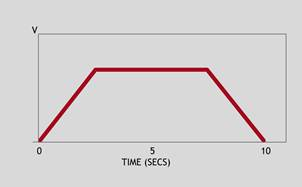
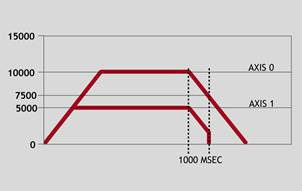

Axis Command
CANCEL([mode])
CA([mode])
Used to cancel current or buffered axis commands on an axis or an interpolating axis group.
Velocity profiled moves, for example; FORWARD , REVERSE , MOVE , MOVEABS , MOVECIRC , MHELICAL , MOVEMODIFY , will be ramped down, then terminated once it comes to rest, while other move types will be terminated immediately.
Cancelling the current move (cancel modes 0 and 2) will decelerate at FASTDEC if specified, otherwise at DECEL .
Cancelling buffered moves (those that will be processed after the current move completes), will cause the current move to terminate normally at its target position (i.e. with a deceleration of DECEL , as if the buffered moves had never been loaded), unless there is not enough room to come to rest before the current move completes, in which case motion will come to rest within the cancelled moves, after which they will be unloaded from the move buffer.
Cancelling the last buffered move will cause it to be immediately removed from the move buffer unless its distance is required for motion to come to rest within, after which it will be unloaded from the move buffer. If no moves are buffered, the current move will be cancelled.
CANCEL can be called manually, but also automatically by software limits, hardware limits and MOTION_ERRORs .
If the axis being cancelled has an ADDAX associated with it, then this will remain active unless AXIS_MODE.3 is set, in which case it will be deactivated and will require the use of ADDAX to reactivate it.
When cancelling a MOVEADD (cancel mode 5), both the MOVEADD and the current move on the axis will be cancelled.
|
mode: |
0 (default) |
Cancels the currently executing move, indicated by MTYPE |
|
1 |
Cancels all buffered moves, indicated by NTYPE , on the base axis (excluding PMOVE ) |
|
|
2 |
Cancels all active and buffered moves, including the PMOVE if it is to be loaded on the BASE axis |
|
|
3 |
Terminate the current move without stopping first to allow following move to be merged |
|
|
4 |
Terminate the last buffered move on the base axis |
|
|
5 |
Cancels the currently executing move and the MOVEADD additional movement |
|
|
6 |
Cancels the MOVEADD additional movement |
CANCEL(0) will only cancel the presently executing move. If further moves are buffered, then they will be loaded and so motion will not stop. Use CANCEL(2) if all motion on an axis or interpolating axis group needs stopping, or RAPIDSTOP(2) if all motion on all axes needs stopping.
CANCEL(3) will only cancel the current move at speed if a following move exists in the move buffer, otherwise it will perform a normal cancel.
Move the base axis forward at the programmed SPEED , wait for 10 seconds, then slow down and stop the axis at the programmed DECEL rate.

FORWARD
WA(10000)
CANCEL 'Stop movement after 10 seconds (same as CANCEL(0))
A flying shear uses a sequence of MOVELINK s to make the base axis follow a reference encoder on axis 4. When the shear returns to the top position an input is triggered, this removes the buffered MOVELINK and replace with a decelerating MOVELINK to ramp down the slave (base) axis.
ref_axis = 4
REPEAT
MOVELINK(100, 100, 0, 0, ref_axis)
WAIT LOADED 'Make sure the NTYPE buffer is empty each time
UNTIL IN(5) = ON
CANCEL(1) 'Cancel the MOVELINK in the NTYPE buffer
MOVELINK(100, 200, 0, 200, ref_axis) 'Deceleration ramp
CANCEL 'Cancel the main MOVELINK, this starts the deceleration
Two axes are connected using a ratio of 1:2. Axis 0 is cancelled after 1 second, then axis 1 is cancelled when the speed drops to a specified level (in this example, 7500). Following the first CANCEL, axis 1 will decelerate at the DECEL rate until axis 1’s CONNECT is cancelled, causing it to stop instantly.

BASE(0)
SPEED = 10000
FORWARD
CONNECT(0.5, 0) AXIS(1)
WA(1000)
CANCEL
WAIT UNTIL VP_SPEED <= 7500
CANCEL AXIS(1)
FASTDEC , FASTJERK , RAPIDSTOP